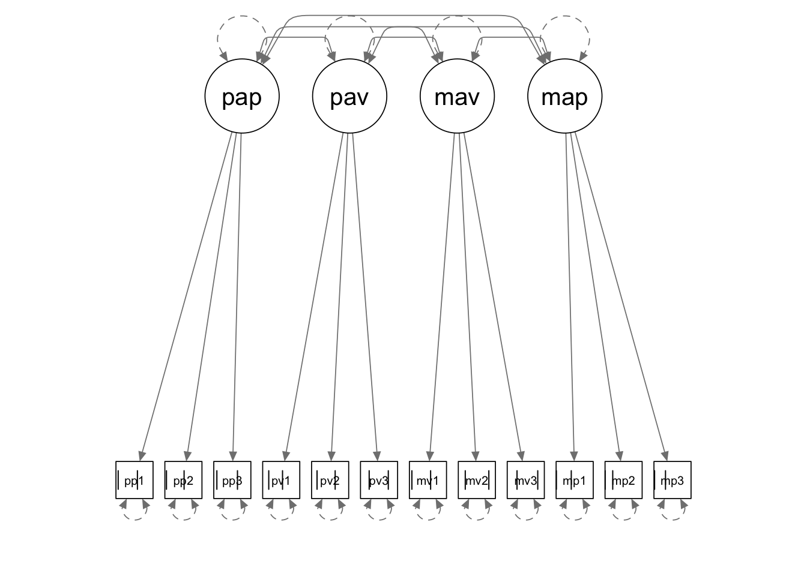

In this tutorial, we are going to use lavaan to deal with ordered categorical data. The example corresponds to the Achievement Goal Questionnaire example in your course slides.
library(lavaan)
library(semPlot)The data for this example is saved in a txt file named “categorical_data.txt”, which is provided as part of the course materials. You can use the read.delim() function to read in a txt file.
In order for lavaan to properly deal with categorical data, you should either make sure the categorical variables are declared as “ordered” in your data frame, or the variables are specified as “ordered” when you call up the fitting function.
setwd(mypath) # change it to the path of your own data folder
categorical <- read.delim("categorical_data.txt", sep="\t", header = T)
colnames(categorical) <- c('pap1', 'pap2', 'pap3', 'pav1', 'pav2', 'pav3',
'mav1', 'mav2', 'mav3', 'map1', 'map2', 'map3')
categorical <- apply(categorical, 2, ordered)You can take a look at the data and get the sample statistics.
# descriptive statistics
str(categorical)## chr [1:299, 1:12] "3" "2" "1" "3" "3" "3" "3" "2" "1" "3" "2" "2" "3" "2" "1" "2" "1" ...
## - attr(*, "dimnames")=List of 2
## ..$ : NULL
## ..$ : chr [1:12] "pap1" "pap2" "pap3" "pav1" ...summary(categorical)## pap1 pap2 pap3 pav1
## Length:299 Length:299 Length:299 Length:299
## Class :character Class :character Class :character Class :character
## Mode :character Mode :character Mode :character Mode :character
## pav2 pav3 mav1 mav2
## Length:299 Length:299 Length:299 Length:299
## Class :character Class :character Class :character Class :character
## Mode :character Mode :character Mode :character Mode :character
## mav3 map1 map2 map3
## Length:299 Length:299 Length:299 Length:299
## Class :character Class :character Class :character Class :character
## Mode :character Mode :character Mode :character Mode :character
If you have not declared the variables as “ordered” in your data frame, when you call up the fitting function, you must add the ordered = argument to tell lavaan which of the variables should be treated as categorical data.
Whend dealing with categorical data, the current version of lavaan only supports WLS estimators and its ‘robust’ variants. By default, lavaan will use the WLSMV estimator for categorical data. You can switch to other estimators using the estimator = argument. For example, I requested to use the WLSM estimator, which is a robust variant of DWLS. It only uses the diagonal of the weight matrix for estimation; but the the standard errors and test statistics are computed based on the full weight matrix.
categorical.model <- '
pap =~ NA*pap1 + pap2 + pap3
pav =~ NA*pav1 + pav2 + pav3
mav =~ NA*mav1 + mav2 + mav3
map =~ NA*map1 + map2 + map3
pap ~~ 1*pap
pav ~~ 1*pav
mav ~~ 1*mav
map ~~ 1*map
'
cat.fit <- sem(categorical.model,
data = categorical,
estimator = "WLSM",
ordered = c('pap1','pap2','pap3',
'pav1','pav2','pav3',
'mav1','mav2','mav3',
'map1','map2','map3'))
summary(cat.fit, fit.measures = T, standardized = T)## lavaan 0.6-8 ended normally after 19 iterations
##
## Estimator DWLS
## Optimization method NLMINB
## Number of model parameters 42
##
## Number of observations 299
##
## Model Test User Model:
## Standard Robust
## Test Statistic 68.539 102.371
## Degrees of freedom 48 48
## P-value (Chi-square) 0.027 0.000
## Scaling correction factor 0.670
## Satorra-Bentler correction
##
## Model Test Baseline Model:
##
## Test statistic 2437.898 2437.898
## Degrees of freedom 66 66
## P-value 0.000 0.000
## Scaling correction factor 1.000
##
## User Model versus Baseline Model:
##
## Comparative Fit Index (CFI) 0.991 0.977
## Tucker-Lewis Index (TLI) 0.988 0.968
##
## Robust Comparative Fit Index (CFI) 0.985
## Robust Tucker-Lewis Index (TLI) 0.979
##
## Root Mean Square Error of Approximation:
##
## RMSEA 0.038 0.062
## 90 Percent confidence interval - lower 0.013 0.041
## 90 Percent confidence interval - upper 0.057 0.082
## P-value RMSEA <= 0.05 0.838 0.161
##
## Robust RMSEA 0.050
## 90 Percent confidence interval - lower 0.037
## 90 Percent confidence interval - upper 0.064
##
## Standardized Root Mean Square Residual:
##
## SRMR 0.067 0.067
##
## Parameter Estimates:
##
## Standard errors Robust.sem
## Information Expected
## Information saturated (h1) model Unstructured
##
## Latent Variables:
## Estimate Std.Err z-value P(>|z|) Std.lv Std.all
## pap =~
## pap1 0.754 0.042 17.987 0.000 0.754 0.754
## pap2 0.851 0.032 26.348 0.000 0.851 0.851
## pap3 0.855 0.039 21.745 0.000 0.855 0.855
## pav =~
## pav1 0.628 0.050 12.560 0.000 0.628 0.628
## pav2 0.644 0.050 12.767 0.000 0.644 0.644
## pav3 0.911 0.041 22.446 0.000 0.911 0.911
## mav =~
## mav1 0.539 0.064 8.458 0.000 0.539 0.539
## mav2 0.842 0.050 16.813 0.000 0.842 0.842
## mav3 0.867 0.043 19.948 0.000 0.867 0.867
## map =~
## map1 0.787 0.087 9.018 0.000 0.787 0.787
## map2 0.718 0.075 9.579 0.000 0.718 0.718
## map3 0.628 0.075 8.318 0.000 0.628 0.628
##
## Covariances:
## Estimate Std.Err z-value P(>|z|) Std.lv Std.all
## pap ~~
## pav 0.526 0.056 9.473 0.000 0.526 0.526
## mav 0.135 0.071 1.895 0.058 0.135 0.135
## map 0.259 0.081 3.216 0.001 0.259 0.259
## pav ~~
## mav 0.489 0.057 8.519 0.000 0.489 0.489
## map 0.166 0.091 1.821 0.069 0.166 0.166
## mav ~~
## map 0.156 0.085 1.835 0.066 0.156 0.156
##
## Intercepts:
## Estimate Std.Err z-value P(>|z|) Std.lv Std.all
## .pap1 0.000 0.000 0.000
## .pap2 0.000 0.000 0.000
## .pap3 0.000 0.000 0.000
## .pav1 0.000 0.000 0.000
## .pav2 0.000 0.000 0.000
## .pav3 0.000 0.000 0.000
## .mav1 0.000 0.000 0.000
## .mav2 0.000 0.000 0.000
## .mav3 0.000 0.000 0.000
## .map1 0.000 0.000 0.000
## .map2 0.000 0.000 0.000
## .map3 0.000 0.000 0.000
## pap 0.000 0.000 0.000
## pav 0.000 0.000 0.000
## mav 0.000 0.000 0.000
## map 0.000 0.000 0.000
##
## Thresholds:
## Estimate Std.Err z-value P(>|z|) Std.lv Std.all
## pap1|t1 -1.553 0.115 -13.462 0.000 -1.553 -1.553
## pap1|t2 0.198 0.073 2.712 0.007 0.198 0.198
## pap2|t1 -1.712 0.128 -13.358 0.000 -1.712 -1.712
## pap2|t2 0.046 0.073 0.635 0.525 0.046 0.046
## pap3|t1 -1.381 0.104 -13.239 0.000 -1.381 -1.381
## pap3|t2 0.355 0.074 4.782 0.000 0.355 0.355
## pav1|t1 -0.979 0.087 -11.279 0.000 -0.979 -0.979
## pav1|t2 0.088 0.073 1.212 0.225 0.088 0.088
## pav2|t1 -1.049 0.089 -11.763 0.000 -1.049 -1.049
## pav2|t2 0.346 0.074 4.667 0.000 0.346 0.346
## pav3|t1 -0.725 0.080 -9.068 0.000 -0.725 -0.725
## pav3|t2 0.672 0.079 8.517 0.000 0.672 0.672
## mav1|t1 -1.499 0.112 -13.431 0.000 -1.499 -1.499
## mav1|t2 0.181 0.073 2.481 0.013 0.181 0.181
## mav2|t1 -0.888 0.084 -10.567 0.000 -0.888 -0.888
## mav2|t2 0.926 0.085 10.876 0.000 0.926 0.926
## mav3|t1 -0.630 0.078 -8.072 0.000 -0.630 -0.630
## mav3|t2 0.926 0.085 10.876 0.000 0.926 0.926
## map1|t1 -2.474 0.252 -9.807 0.000 -2.474 -2.474
## map1|t2 -0.233 0.073 -3.173 0.002 -0.233 -0.233
## map2|t1 -2.712 0.331 -8.181 0.000 -2.712 -2.712
## map2|t2 -0.816 0.082 -9.935 0.000 -0.816 -0.816
## map3|t1 -2.127 0.179 -11.902 0.000 -2.127 -2.127
## map3|t2 -0.493 0.076 -6.494 0.000 -0.493 -0.493
##
## Variances:
## Estimate Std.Err z-value P(>|z|) Std.lv Std.all
## pap 1.000 1.000 1.000
## pav 1.000 1.000 1.000
## mav 1.000 1.000 1.000
## map 1.000 1.000 1.000
## .pap1 0.432 0.432 0.432
## .pap2 0.276 0.276 0.276
## .pap3 0.268 0.268 0.268
## .pav1 0.606 0.606 0.606
## .pav2 0.585 0.585 0.585
## .pav3 0.169 0.169 0.169
## .mav1 0.710 0.710 0.710
## .mav2 0.291 0.291 0.291
## .mav3 0.248 0.248 0.248
## .map1 0.381 0.381 0.381
## .map2 0.485 0.485 0.485
## .map3 0.606 0.606 0.606
##
## Scales y*:
## Estimate Std.Err z-value P(>|z|) Std.lv Std.all
## pap1 1.000 1.000 1.000
## pap2 1.000 1.000 1.000
## pap3 1.000 1.000 1.000
## pav1 1.000 1.000 1.000
## pav2 1.000 1.000 1.000
## pav3 1.000 1.000 1.000
## mav1 1.000 1.000 1.000
## mav2 1.000 1.000 1.000
## mav3 1.000 1.000 1.000
## map1 1.000 1.000 1.000
## map2 1.000 1.000 1.000
## map3 1.000 1.000 1.000